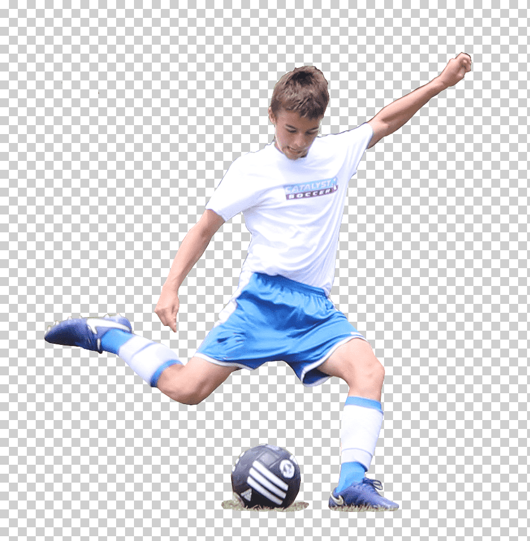
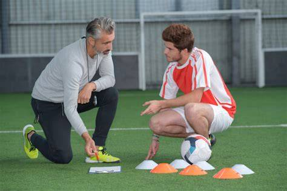

El entrenamiento de fútbol es mucho más que la simple práctica de patear un balón. Constituye un proceso multifacético que contribuye al desarrollo físico, técnico, táctico, psicológico y social de los futbolistas, impactando positivamente en su vida dentro y fuera del campo. Comprender sus propósitos y beneficios es fundamental para valorar su rol en la formación de deportistas y personas.

1. Desarrollo Físico y Salud: Construyendo un Cuerpo Competitivo
El fútbol, por su naturaleza, exige un alto nivel de condición física. El entrenamiento estructurado optimiza estas capacidades y promueve la salud a largo plazo.
-
Mejora de las Capacidades Condicionales:
- Resistencia Cardiovascular: El constante movimiento, sprints y cambios de ritmo fortalecen el corazón y los pulmones, mejorando la capacidad de mantener el esfuerzo durante todo el partido y aumentando la resistencia general.
- Velocidad y Agilidad: Los ejercicios específicos desarrollan la explosividad en las piernas, la rapidez de reacción y la capacidad de cambiar de dirección de forma ágil, esenciales para el desmarque, la defensa y el ataque.
- Fuerza y Potencia Muscular: El entrenamiento de fuerza, adaptado a las demandas del fútbol, aumenta la potencia de los músculos (especialmente en piernas y core), mejorando la capacidad de salto, el impacto en los duelos y la eficacia en el disparo.
- Flexibilidad y Movilidad: Los programas de entrenamiento incluyen ejercicios para mantener y mejorar el rango de movimiento de las articulaciones, lo que previene lesiones y permite una mayor amplitud en los gestos técnicos.
-
Prevención de Lesiones: Un entrenamiento bien planificado fortalece los músculos estabilizadores, mejora la propiocepción (sentido del equilibrio) y enseña técnicas de movimiento correctas, reduciendo significativamente el riesgo de sufrir esguinces, desgarros y otras lesiones comunes.
-
Salud General y Bienestar: La práctica regular de fútbol combate el sedentarismo, ayuda a mantener un peso corporal saludable, reduce el riesgo de enfermedades crónicas (cardiovasculares, diabetes tipo 2) y mejora la calidad del sueño.
-
Coordinación y Habilidades Motrices: El entrenamiento fomenta el desarrollo de la coordinación general, el equilibrio, la lateralidad y la motricidad fina, habilidades que benefician no solo el rendimiento deportivo sino también las actividades de la vida diaria.

2. Dominio Técnico y Táctico: La Inteligencia del Juego
El entrenamiento de fútbol enseña a los jugadores a interactuar eficazmente con el balón y a comprender las estrategias y dinámicas del juego.
- Perfeccionamiento Técnico: El entrenamiento constante permite a los futbolistas dominar y refinar las habilidades fundamentales:
- Control del Balón: Conducir, recibir y amortiguar el balón con precisión y fluidez.
- Pase: Ejecutar pases cortos, largos, al espacio y con diferentes superficies del pie, asegurando una buena circulación del balón.
- Tiro: Desarrollar la potencia y precisión en el disparo a portería.
- Regate y Dribling: Superar oponentes y mantener la posesión del balón en situaciones de uno contra uno.
- Remate de Cabeza: Utilizar la cabeza para controlar, pasar o marcar goles.
- Desarrollo de la Inteligencia Táctica: El entrenamiento enseña a los jugadores a:
- Leer el Juego: Comprender las situaciones que se presentan en el campo y tomar decisiones rápidas y correctas.
- Posicionamiento: Saber dónde ubicarse en el campo según la fase del juego (ataque, defensa, transición) y el rol asignado.
- Lectura de Espacios: Identificar y utilizar los espacios libres para crear oportunidades o cerrar las del rival.
- Conceptos Tácticos: Entender y aplicar principios como la presión, las coberturas, los desmarques, las transiciones defensa-ataque y ataque-defensa.
- Adaptación Estratégica: Aprender a ajustar el juego del equipo según las fortalezas del rival o las necesidades del marcador.
3. Desarrollo Psicológico y Mental: La Fortaleza Interior
El fútbol es un deporte que exige tanto a nivel físico como mental. El entrenamiento ayuda a cultivar cualidades psicológicas esenciales.
- Autodisciplina y Compromiso: La asistencia regular a los entrenamientos, el cumplimiento de las indicaciones y el esfuerzo constante inculcan un fuerte sentido de la disciplina y el compromiso con los objetivos.
- Resiliencia y Manejo de la Frustración: Los jugadores aprenden a superar errores, derrotas y momentos difíciles. El entrenamiento fomenta la capacidad de recuperarse, aprender de los fallos y seguir adelante con determinación.
- Confianza y Autoestima: El progreso en las habilidades técnicas y físicas, así como los éxitos colectivos, fortalecen la autoconfianza del jugador, permitiéndole afrontar desafíos con mayor seguridad.
- Concentración y Enfoque: El entrenamiento requiere mantener la atención en las tareas, las instrucciones y las situaciones del juego, desarrollando la capacidad de concentración sostenida, fundamental para el rendimiento.
- Gestión de la Presión: Los partidos y las competiciones exigen rendimiento bajo presión. El entrenamiento simula estas situaciones, ayudando a los jugadores a gestionar el estrés y a rendir de manera efectiva en momentos cruciales.
- Mentalidad Competitiva: Se fomenta el deseo de superación, la ambición por ganar y el espíritu de lucha, inculcando una mentalidad orientada al éxito.

4. Desarrollo Social y Valores: Formando Ciudadanos
El fútbol es un vehículo excepcional para el aprendizaje de valores y habilidades sociales.
- Trabajo en Equipo y Cooperación: El fútbol es intrínsecamente un deporte de equipo. Los jugadores aprenden a colaborar, a confiar en sus compañeros, a comunicarse eficazmente y a entender que el éxito colectivo depende del esfuerzo de todos.
- Respeto: Se inculca el respeto hacia los compañeros, los rivales, los árbitros, los entrenadores y las normas del juego. El juego limpio (fair play) es un valor fundamental.
- Liderazgo y Responsabilidad: A medida que los jugadores avanzan, se les anima a asumir responsabilidades, a tomar la iniciativa y a convertirse en líderes positivos dentro y fuera del campo.
- Habilidades de Comunicación: La interacción constante en el campo (dar y recibir indicaciones, animarse mutuamente) mejora las habilidades comunicativas.
- Inclusión y Diversidad: El fútbol, a menudo, congrega a personas de diferentes orígenes, culturas y habilidades, promoviendo la inclusión y el entendimiento mutuo.
- Gestión de la Victoria y la Derrota: El entrenamiento enseña a celebrar los triunfos con humildad y a aceptar las derrotas con dignidad, aprendiendo de ambas experiencias.
Conclusión
En resumen, el entrenamiento de fútbol es una herramienta poderosa para el desarrollo integral del individuo. Más allá de formar futbolistas de élite, prepara a las personas para afrontar los desafíos de la vida con un cuerpo sano, una mente fuerte y un conjunto de valores sociales sólidos. Es una inversión en salud física, bienestar mental, habilidades técnicas y, sobre todo, en la formación de carácter.
|